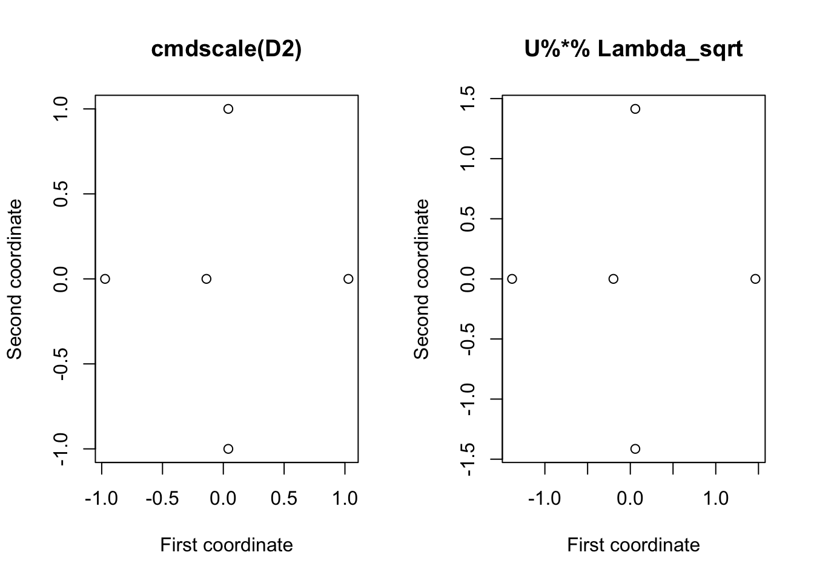

1.1 Classical MDS
Classical MDS is based upon Euclidean distances: \[d(\mathbf x, \mathbf x') = ||\mathbf x-\mathbf x'||_2 = \sqrt{(\mathbf x-\mathbf x')^\top (\mathbf x-\mathbf x')}.\]
Since Euclidean distances satisfy the triangle inequality (1.1), it follows that Euclidean distance is a metric distance. In general, any distance derived from a norm is a metric distance.
Two other matrices play key roles in MDS.
Definition 1.3 Given a distance matrix \({\mathbf D}=\{d_{ij}\}_{i,j=1}^n\), define \(\mathbf A\) to be the matrix of negative square distances divided by two: \[\begin{equation} \mathbf A=\{a_{ij}\}_{i,j=1}^n, \quad \text{where} \qquad a_{ij}=-\frac{1}{2}d_{ij}^2. \tag{1.2} \end{equation}\]
The centred inner-product matrix (also called the centred-Gram matrix) is \[\begin{equation} {\mathbf B}={\mathbf H} \mathbf A{\mathbf H}, \tag{1.3} \end{equation}\] where \[\begin{equation*} {\mathbf H}={\mathbf I}_n -n^{-1}{\mathbf 1}_n {\mathbf 1}_n^\top \end{equation*}\] is the \(n \times n\) centering matrix (see Section ??).The reason we call \(\mathbf B\) the centred inner product matrix will become clear later.
Main result
We now present the key result for classical MDS. It says that a distance matrix \(\mathbf D\) is a Euclidean distance matrix if and only if the corresponding centred inner product matrix \(\mathbf B\) is positive semi-definite. It also tells us how given data \(\mathbf X\) we can compute \(\mathbf B\) directly from \(\mathbf X\). Conversely, and more importantly, it tells us how given \(\mathbf B\) we can compute some data points \(\mathbf X\) that have corresponding Euclidean distance matrix \(\mathbf D\).
Theorem 1.1 Let \(\mathbf D\) denote an \(n \times n\) distance matrix with corresponding centered inner-product matrix \(\mathbf B=\mathbf H\mathbf A\mathbf H.\)
If \(\mathbf D\) is a Euclidean distance matrix for the sample of \(n\) vectors \(\mathbf x_1,\ldots , \mathbf x_n\), then \[\begin{equation} \mathbf B= ({\mathbf H} {\mathbf X})({\mathbf H} {\mathbf X})^\top. \tag{1.4} \end{equation}\] Thus \(\mathbf B\) is positive semi-definite.
Suppose \(\mathbf B\) is positive semi-definite with eigenvalues \(\lambda_1 \geq \lambda_2 \cdots \geq \lambda_k \geq 0\) and that it has spectral decomposition \(\mathbf B={\mathbf U} {\pmb \Lambda}{\mathbf U}^\top\), where \({\pmb \Lambda}=\text{diag}\{\lambda_1 \ldots \lambda_k\}\) and \(\mathbf U\) is \(n \times k\) and satisfies \({\mathbf U}^\top {\mathbf U}={\mathbf I}_k\). Then \[{\mathbf X}=[\mathbf x_1, \ldots , \mathbf x_n]^\top={\mathbf U}{\pmb \Lambda}^{1/2}\] is an \(n \times k\) data matrix which has Euclidean distance marrix \(\mathbf D\).
Moreover, for this data matrix \(\bar{\mathbf x}={\mathbf 0}_k\) and \(\mathbf B\) represents the inner product matrix with elements given by (1.4). `
For part 1. we may equivalently write \[\begin{equation} b_{ij}=(\mathbf x_i-\bar{\mathbf x})^\top (\mathbf x_j - \bar{\mathbf x}), \qquad i,j=1,\ldots , n, \end{equation}\] where \(\bar{\mathbf x}=n^{-1}\sum_{i=1}^n \mathbf x_i\) is the sample mean vector. This illustrates why we call \(\mathbf B\) the centred inner-product matrix: \(\mathbf H\mathbf X\) is the centred data matrix, and \((\mathbf H\mathbf X)(\mathbf H\mathbf X)^\top\) thus contains the inner product of each pair of centred vectors.
Important Point
Proposition 1.1 may be useful even if \({\mathbf D}\) is not a Euclidean distance matrix (in which case \(\mathbf B\) will have some negative eigenvalues).
Instead of using \(\mathbf B\) in Proposition 1.1 we can use its positive part. If \(\mathbf B\) has spectral decomposition \(\sum_{j=1}^p \lambda_j \mathbf u_j \mathbf u_j^\top\), then its positive definite part is defined by \[ \mathbf B_{\text{pos}}=\sum_{j: \, \lambda_j>0} \lambda_j \mathbf u_j \mathbf u_j^\top. \] In other words, we sum over those \(j\) such that \(\lambda_j\) is positive.
Then \(\mathbf B_{\text{pos}}\) is positive semi-definite and so we can use part 2. of Theorem 1.1 to determine a Euclidean configuration which has centred inner-product matrix \(\mathbf B_{\text{pos}}\). Then, provided the negative eigenvalues are small in absolute value relative to the positive eigenvalues, the inter-point distances of the new points in Euclidean space should provide a good approximation to the original inter-point distances \((d_{ij})\).
1.1.1 Example 1
Consider the five point in \(\mathbb{R}^2\): \[ \mathbf x_1=(0,0)^\top, \mathbf x_2 =(1,0)^\top, \quad \mathbf x_3 =(0,1)^\top \] \[ \mathbf x_4 =(-1,0)^\top \quad \text{and} \quad \mathbf x_5=(0,-1)^\top. \]
The resulting distance matrix is \[ \mathbf D=\left [ \begin{array}{ccccc} 0&1&1&1&1\\ 1&0&\sqrt{2}&2&\sqrt{2}\\ 1&\sqrt{2}&0&\sqrt{2}&2\\ 1&2&\sqrt{2}&0&\sqrt{2}\\ 1&\sqrt{2}&2&\sqrt{2}&0 \end{array} \right ]. \] Using (1.2) first to calculate \(\mathbf A\), and then using (1.3) to calculate \(\mathbf B\), we find that \[ \mathbf A=-\left [ \begin{array}{ccccc} 0&0.5&0.5&0.5&0.5\\ 0.5&0&1&2&1\\ 0.5&1&0&1&2\\ 0.5&2&1&0&1\\ 0.5&1&2&1&0 \end{array} \right ] \] and \[ \mathbf B=\left [ \begin{array}{ccccc} 0& 0&0&0&0\\ 0&1&0&-1&0\\ 0&0&1&0&-1\\ 0&-1&0&1&0\\ 0&0&-1&0&1 \end{array} \right ]. \]
In R we can compute these as follows:
X <- matrix(c(0,0,
1,0,
0,1,
-1,0,
0,-1), nc=2, byrow=TRUE)
D <- as.matrix(dist(X, upper=T, diag=T))
A <- -D^2/2
# note D^2 does element wise operations, different to D%*%D
H <- diag(5) - 1/5 * matrix(rep(1,5), nc=1)%*%matrix(rep(1,5), nr=1)
B <- H%*% A%*%H #check this matches (H %*% X) %*% t(H %*% X)You should check that \(\mathbf H\mathbf A\mathbf H\) is the same as \((\mathbf H\mathbf X)(\mathbf H\mathbf X)^\top\), thus verifying part 1. of Theorem 1.1. Note that there will be very small differences (\(\sim 10^{-16}\)) due to numerical errors.
Can we now find a set of \(5\) points in \(\mathbb{R}^2\) that have a Euclidean distance matrix \(\mathbf D\) if we are only given the matrix \(\mathbf B\)?
- Yes, this is what part 2. of the Theorem gives us.
Firstly, we need to compute the spectral decomposition of \(\mathbf B\). The eigenvalues of \(\mathbf B\) are \[ \lambda_1=\lambda_2=2 \qquad \text{and} \qquad \lambda_3=\lambda_4=\lambda_5=0. \] Note that, as expected from Proposition 1.1, \(\mathbf B\) is positive semi-definite because it is a Euclidean distance matrix.
Because we have a repeated eigenvalue (\(\lambda=2\) has multiplicity 2), the eigenspace associated with \(\lambda=2\) is a two dimensional space, and so there are many pairs of mutually orthogonal unit eigenvectors spanning this eigenspace (i.e., there is not a unique pair of eigenvectors). The sparsest choice (i.e. the one with most zero elements) is \[ \mathbf u_1= \begin{pmatrix}0 \\ 0 \\ -\frac{1}{\sqrt{2}} \\ 0 \\ -\frac{1}{\sqrt{2}} \end{pmatrix} \qquad \text{and} \qquad \mathbf q_2 =\begin{pmatrix}0 \\ -\frac{1}{\sqrt{2}} \\ 0 \\ \frac{1}{\sqrt{2}}\\ 0 \end{pmatrix}. \]
Note that if we compute these in R, you may well get different eigenvectors, but the subspace described by the pair of vectors will be the same.
## [1] 2.000000e+00 2.000000e+00 1.207037e-15 3.331224e-16 -2.775558e-17## [,1] [,2]
## [1,] 0.0000000 0.0000000
## [2,] -0.6916609 0.1469869
## [3,] -0.1469869 -0.6916609
## [4,] 0.6916609 -0.1469869
## [5,] 0.1469869 0.6916609## [1] 2.000000e+00 2.000000e+00 1.110223e-15 1.110223e-15 0.000000e+00## [,1] [,2]
## [1,] 0.0000000 0.0000000
## [2,] 0.0000000 -0.7071068
## [3,] -0.7071068 0.0000000
## [4,] 0.0000000 0.7071068
## [5,] 0.7071068 0.0000000We can compute the coordinates of five points in \(\mathbb{R}^2\) which have Euclidean distance matrix, \(\mathbf D,\) by \[ \mathbf Q\boldsymbol \Lambda^{1/2}=\sqrt{2}[\mathbf q_1 , \mathbf q_2].\]
Note again that these coordinates are not unique as any rotation or translation of them will have the same distance matrix. In particular, when doing computations in R we may find different answers depending upon how we do the computation. So for example, if we use the eigendecompostion of \(\mathbf B= \mathbf H\mathbf A\mathbf H\)
we find \[\begin{pmatrix}0&0 \\-0.978&0.208 \\-0.208&-0.978 \\0.978&-0.208 \\0.208&0.978 \\\end{pmatrix}.\] Where as if we use the eigen decomposition of \((\mathbf H\mathbf H)(\mathbf H\mathbf X)^\top\) we find a different set of points:
\[\begin{pmatrix}0&0 \\0&-1 \\-1&0 \\0&1 \\1&0 \\\end{pmatrix}.\]
The distance matrices for both sets of points are equal to \(\mathbf D\)
## 1 2 3 4 5
## 1 0.0 1.0 1.0 1.0 1.0
## 2 1.0 0.0 1.4 2.0 1.4
## 3 1.0 1.4 0.0 1.4 2.0
## 4 1.0 2.0 1.4 0.0 1.4
## 5 1.0 1.4 2.0 1.4 0.0## 1 2 3 4 5
## 1 0.0 1.0 1.0 1.0 1.0
## 2 1.0 0.0 1.4 2.0 1.4
## 3 1.0 1.4 0.0 1.4 2.0
## 4 1.0 2.0 1.4 0.0 1.4
## 5 1.0 1.4 2.0 1.4 0.0Finally, note that as always, there is an R command that will do all of this work for us
giving the set of points \[\begin{pmatrix}0&0 \\1&0 \\0&-1 \\-1&0 \\0&1 \\\end{pmatrix}\]
If we plot the original data points \(\mathbf X\), along with the three sets of reconstructed data points Y, Y2, and Y.mds we can see that they are essentially the same, apart from being rotatated or reordered.

In the Exercises you will be asked to verify that there is an orthogonal transformation which maps the original five points onto the set of five reconstructed points.
1.1.2 Example 2
Let’s now look at a case for which \(\mathbf B\) isn’t positive dinite. We’ll create this by modifying the distance matrix we had before:
\[\mathbf D_2 = \begin{pmatrix}0&0.5&1&1&1 \\0.5&0&1.41&2&1.41 \\1&1.41&0&1.41&2 \\1&2&1.41&0&1.41 \\1&1.41&2&1.41&0 \\\end{pmatrix}.\] This is a distance matrix, but is it a Euclidean distance matrix? I.e., is there a set of vectors \(\mathbf x_1, \ldots, \mathbf x_5\) which have Euclidean distances between them given by \(\mathbf D_2\)?
If we look at the eigenvalues of the centred inner-product matrix \(\mathbf B\) associated with \(\mathbf D_2\), then we find that it has negative eigenvalues, and is thus not positive semi-definite. Thus by Theorem 1.1 \(\mathbf D_2\) is not a Euclidean distance matrix.
D2 <- D
D2[2,1]<-0.5
D2[1,2]<-D2[2,1]
A2 <- -D2^2/2
# note D^2 does element wise operations, different to D%*%D
B2 <- H%*% A2%*%H #check this matches (H %*% X) %*% t(H %*% X)
eigen(B2)$values## [1] 2.026016e+00 2.000000e+00 1.004310e-01 -7.216450e-16 -2.764470e-01We can still use classical multidimensional scaling to find a set of points \(\mathbf x_1, \ldots, \mathbf x_5\) that have distances approximately given by \(\mathbf D_2\).
cmdscale allows us to specify the dimension of the points \(\mathbf x_i\). If we pick \(\dim(\mathbf x)=2\) then it gives us the set of points
## [,1] [,2]
## 1 -0.13881300 1.449541e-15
## 2 -0.97216111 1.011091e-14
## 3 0.04112656 -1.000000e+00
## 4 1.02872100 -1.018790e-14
## 5 0.04112656 1.000000e+00which have a distance matrix that approximates \(\mathbf D_2\), but does not equal it. By using a different number of dimensions, we may be able to get a set of points have a distance matrix closer to \(\mathbf D\), but we will not be able to find a set of \(5\) points that have a distance matrix exactly equal to \(\mathbf D_2\).
To do this ourselves (i.e., not using cmdscale) we can use the commands
## [,1] [,2]
## [1,] -0.19758391 -7.490239e-16
## [2,] -1.38375651 -5.393269e-15
## [3,] 0.05853879 -1.414214e+00
## [4,] 1.46426283 5.197828e-15
## [5,] 0.05853879 1.414214e+00
1.1.3 Example 3
Finally, if we apply the cmdscale to the distances between UK cities from the introduction, we get the ‘coordinates’ shown below.

This ‘map’ is essentially correct, but it is rotated \(90^\circ\).